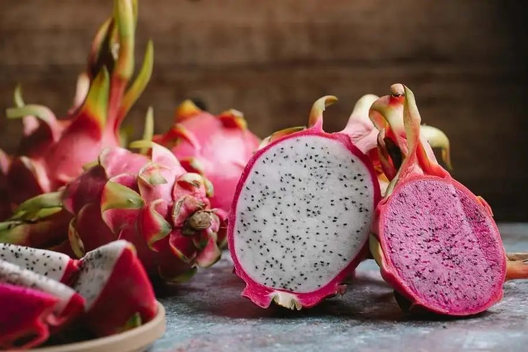

I have had the wonderful experience of moving to Indonesia and living there for 6 years. The thing I
love most about Indonesia is its diversity. Diversity is one word
that can describe almost any aspect of Indonesia. Barack Obama lived in Indonesia for a few years of his childhood, and
he shares a similar sentiment:
“Because Indonesia is made up of thousands of islands, hundreds of languages and people from scores of regions and
ethnic groups, my time here helped me appreciate the humanity of all people.” - Barack Obama
I couldn't agree more! Not only are the people, languages, and cultures
they represent highly diverse, but the array of natural plants, wildlife, and natural phenomena exhibit a
similar level of diversity.
There are so many interesting things to talk about when it comes to Indonesia. The list is never-ending.
In this article I want to talk about the variety of tropical fruits that are local to Indonesia. What
follows is a summary of my top tropical fruit recommendations to try for those who are visiting Indonesia. Each one
of these is sure to provide a memorable experience!
The word durian is derived from the Malay word for "thorns".
And by looking at it, it is easy to see why it has been named the
"thorny fruit". In my opinion, a durian just looks like something a person should not eat.
Other than the intimidating thorny outer shell, it also has a very
stinky smell, that can be smelled from far away. In Indonesia, there are even
airlines that will not allow passengers to bring durian on-board the plane
due to its smell. I have tasted durian before and I did not like it very much.
The fruit has a slimey, custardy texture to it. But people from Medan, Indonesia
not only like durian, they love it. It has become almost a part of their identity,
having a reputation around Indonesia for being durian lovers. Even though I did not
like it when I tried it, I still would recommend that if you are ever in Indonesia,
make an effort to get your hands on some durian. The experience is one to remember!
Passion Fruit (Markisa)
One fruit that I enjoyed while in Indonesia was markisa, which
is the Indonesian word for "passion fruit". At times we would drive up into the mountains
and they always had the best markisa there. You can buy it in bundles by the kilogram,
tear it open with your hands, and scoop out the interior with a spoon to enjoy a delicious,
unique citrus flavor that is (when ripened to perfection) a little sweet.
Dragon Fruit (Buah Naga)

Dragon fruit, or buah naga, is originally from the Americas, but it is very commonly grown in Indonesia.
I associate it with Indonesia as well. It grows on a cactus plant, and the fruit inside
can be either red or white. The two colors of fruit taste similar enough to one another, and
the texture of the fruit is similar to the texture of kiwi fruit. However it is also a little
bit crunchy because of all of the little black seeds in it. If you are going to eat red dragon
fruit (my personal favorite), you will want to be sure and not get the fruit on your clothes
because it will stain very easily.
Jackfruit (Nangka)
Jackfruit, or nangka, grows plentifully on trees in Indonesia. Even driving through town, you will
many times be able to see the tall jackfruit trees with the massive 35-40 lb jackfruit hanging from them.
For me, I was always a little bit anxious to stand too close to those trees, out of fear that a
fruit would fall and hit me on the head! My fear was validated when an Indonesian colleague of mine
confirmed that it is not unheard of for a person to be injured by a jackfruit falling.
Jackfruit is a versitale fruit. The unripened green fruit and seeds can be cooked in savory dishes, and
some vegetarians even like to use it as a meat substitute. My favorite form of jackfruit is when it is
added to a curry and served with a traditional Padang dish called
rendang as well as rice, vegetables,
and a spicy sauce commonly served with Indonesian dishes called sambal. When cooked this way,
jackfruit has a stringy texture (kind of like meat), and a more neutral flavor that will absorb the flavor
of the dish it is being cooked in. I've actually never tried the ripened, yellow jackfruit, but I have heard
that it has a sweeter flavor than the less ripe green fruit.
Rambutan
Rambutan is known as the "hairy fruit" as its name is derived from the Malay word for "hair". To eat rambutan, you
can peel off the hairy rind by hand and then enjoy the white fruit that is inside. Rambutan fruit has a pit inside
that you can either eat around or spit out when you are finished. It is very easy to open and eat. It has a flavor
similar to a pear mixed with a grape flavor. The texture of the fruit is soft and easy to chew.
Snake Fruit (Salak)
Tropical fruits are no joke! Whether they are highly potetnt like durian, giant like jackfruit, or brightly colored like
rambutan and dragon fruit, the one thing they all have in common is how intense they seem! Snake fruit, called
salak in Indonesian, is no exception, and it is given the name "snake fruit" for reasons that you will probably
be able to guess with one look at the picture above. That's right, the skin of a snake fruit looks and feels very similar
to snake skin! Snake fruit also has a pit that you don't eat. It is hard to describe
the way snake fruit tastes. The best word I can think of is "tropical", kind of a mix of sweet and citrusy like pineapple
blended with apple or banana. Some salak are more on the sweet side but some are more sour, depending on the variety.
Star Fruit (Belimbing)
Star fruit holds a special place in my heart because it was one of the first Indonesian words that my one year old learned
when we first moved to Indonesia. The Indonesian word for "star fruit" is belimbing, and it is so cute to hear a little
bule (white) boy saying "belimbing, belimbing!" Indonesians loved it so much when my kids would try to speak their language, too. Star
fruit actually looks like a star when it is sliced. The fruit itself is kind of firm like the fruit of a grape but star fruit
tastes more like a ripe pear than a grape, to me at least.
Papaya (Pepaya)
For me, when in Indonesia, the really exotic fruits were fun to try. However, my go-to fruit option for my family was papaya
served with jeruk nipis (lime). The way the flavors of the ripe papaya and the local limes interact with
one another is nothing less than perfection. This was a favorite for my kids too! To them, it tastes like candy.
Harvest Season
While Indonesia grows and harvests most of these fruits all year round, there are some general guidelines to what is considered
in season. The following table shows the best times of year to try the fruits described in this article.
The table is based on the Java fruit seasons, which differ from Sumatra and other parts of the country. For example, if you were
going to want to try durian in Medan (on the island of Sumatra), you would try the best durian during the months of June-September,
but on Java the durain harvest season is October-February.